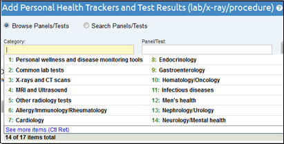
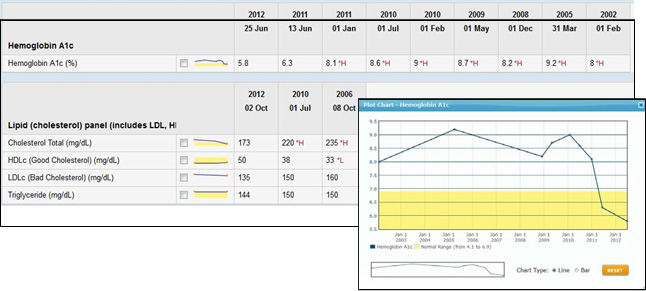

Chapter 14
14. Working with Test Results and Health Trackers
- On the PHR Home page, click the link to the name of the PHR you wish to update. This will expand the PHR entry to display action buttons for the individual's PHR.
- Select the Test Results & Trackers button.
- In the View & Edit Results Timeline window, click the Add Test Results & Trackers button.
- On the Add Test Results & Trackers page, either browse for a test or health tracker using the drop-down list of test panel categories, or select the Search Panels/Tests radio button to search for the name of the test or health tracker you want to add.
- Click the Add button.
- If the test or tracker is already displayed on the Health Record Details page, click the Add More link next to the test. This will open the Add Test Results & Trackers page.
- Enter the new measurement to the test or tracker.
- If needed, add another measurement using the Add More link next to the test or tracker.
- You can also add a new measurement to a test or tracker by clicking the Add Test Results & Trackers link at the top of the PHR Record Details page and searching or browsing for the test or tracker and then clicking the Add button
- Click the View & Edit Results Timeline link at the top of the PHR.
- On the View & Edit Results Timeline page, select the checkbox next to the test results or health tracker data you want to edit and then click the Show Results Timeline button.
- Move your mouse over the column of test results you want to change. A edit icon will appear at the top of the data column. If the edit icon does not appear, make sure you have not selected the Group Data Columns option or checked the Combine records in one timeline table and/or Include test data from other panels checkboxes.
- Right-click the edit icon and select Revise or Delete from the drop-down menu.
- Optionally, click the Show Panel Info button to view and edit the Comments, Where Done, and Due Date fields or click the Show Empty Rows button to view and edit empty rows.
- Make the changes needed or delete the test or tracker.
- Once you have finished editing, click the Save button at the bottom of the page.
- Click the View & Edit Results Timeline link at the top of the PHR.
- On the View & Edit Results Timeline page, select the checkbox next to the test results or health tracker data you want to delete and then click the Show Results Timeline button.
- Move the mouse over the column of test results you want to delete. A e dit icon will appear at the top of the data column. If the icon does not appear, make sure you have not selected the Group Data Columns option or checked the Combine records in one timeline table and/or Include test data from other panels checkboxes.
- Right-click the icon and select Delete from the drop-down menu.
- Optionally, click the Show Panel Info button to view and delete the Comments, Where Done, and Due Date fields or click the Show Empty Rows button to view and edit empty rows.
- Make the changes needed or delete the test or tracker.
- Once you have finished editing or deleting data, click the Save button at the bottom of the page.
- Add new test or tracker results to saved tests or health trackers
- Edit test or tracker results you the have been previously entered
- Delete test or tracker results previously entered
- Print all of your test results
- From the View & Edit Results Timeline page, select one or more tests or health trackers from the list of results or click the Select All checkbox at the top of the list of results.
- Optionally, choose to group your results by day, week, month, or year by choosing a date range from the Group Data Columns drop-down list. You may also choose to limit the date range by selecting a subset of recent results using the Date Range drop down list.
- Click the Show Results Timeline button to display the selected test or tracker results.
- If you wish to see graphs for multiple test result values, select the checkbox next to the graph icon for each set of values you wish to graph.
- Click the graph icon. A separate graph will be shown for each set of test results you have pre-selected.
- To view a graph as either a line chart or a bar graph, select the appropriate radio button and then click the Reset button to display the new graph type.
- To zoom in to a portion of the large graph, left click on the large graph, hold and drag to select an area, and then release the mouse button. You can also select an area on the small graph at the bottom of the window to view it on the large graph.
- Click the Reset button to reset the graph to full size, or to change the graph type.
14.1. Adding New Test Results or Health Trackers
You can enter laboratory, radiology, and diagnostic test results on the Add Tests Results & Trackers screen of the PHR. You can also keep track of disease and symptoms such as diabetes and wheezing associated with asthma, as well as lifestyle measures such as sleep, mood, nutrition, and exercise. These panels are easy to customize for a particular group or institution’s needs.
To add new test results or trackers:
14.2. Adding New Measurements to a Test Result or Health Tracker
14.3. Editing Test Results and Health Trackers
Test result and health tracker data is only editable when the Group Data Columns option is not selected and when the Combine records in one timeline table and/or Include test data from other panels checkboxes are not selected.
Click the Show Panel Info button to view and edit the Comments, Where Done, and Due Date fields.
Click the Show Empty Rows button to view and edit rows that have no data in them.
To edit test results or health trackers that have already been entered:
14.4. Deleting Test Results or Health Trackers
Test result and health tracker data can only be deleted when the Group Data Columns option is not selected and when the Combine records in one timeline table and/or Include test data from other panels checkboxes are not selected.
To delete test results or health trackers that have already been entered:
14.5. Using the View & Edit Results Timeline
The PHR Results Timeline allows you and your physicians to see test and other data over time. The graphing feature makes it easy to look at trends over time as well as get detailed information about specific data points.
Use the View & Edit Results Timeline page to:
· Display a summary of test results and trackers as either a timeline chart or a graph.
14.6. View & Edit the Results Timeline Screen
To view test results from all saved tests or health trackers, click the Select All checkbox or select one or more tests or health trackers from the list. Click the Show Results Timeline button to display the selected results.
Click on the graph icons next to individual measurement results to view them as a graph. See Section 14.7 to learn more about viewing test results as graphs.
The Show Panel Info button allows you to view or hide the Comments, Where Done, and Due Date fields for tests and trackers.
The Show Empty Rows button allows you to view or hide all empty test value rows within the test or tracker.
The Add Test Results & Trackers button takes you to the Add Test Results & Trackers page to search or browse for new tests or trackers.
14.7. View Test or Tracker Results as a Graph
The View & Edit Results Timeline page allows you and your health care provider to quickly and easily track test results such as blood pressure, cholesterol, weight, and others over time. You can also view test results or health trackers as a graph. To view test results or trackers as a graph: